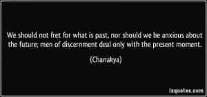
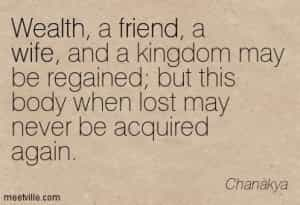

< < < Back
An Introduction To The Machiavelli Of The East – Return Of Kings
A man is born alone and dies alone; he experiences the good and bad consequences of his karma alone, and he goes alone to hell or the Supreme abode. – Kautilya
As with that of great emperors, history also has numerous examples of “kingmakers”: men who ran great empires, while being the actual power behind the throne.
One such notable but little known ancient example is that of Kautilya (also known as Chanakya, c. 350–283 BC), a philosopher, jurist, teacher, economist and royal advisor widely credited for having played an important role in the establishment of the Maurya Empire, which was the first empire in archaeologically recorded history to rule most of the Indian subcontinent.
His social aphorisms and radical political treatise – The Arthashastra – shares commonalities with The Prince and The Art Of War, and has garnered contemporary spotlight in The 48 Laws Of Power – also eliciting comparisons with the likes of Machiavelli.
His life: the rise of a kingmaker
Those who seek to achieve things should show no mercy. – Kautilya
Born into a priest family, Kautilya was educated at Takshashila, an ancient educational centre located in north-western ancient India, where he then became a professor of economics and political science. Later he was introduced to the Nanda king, who humiliated him at the royal court. Kautilya then untied his lock of hair, and swore he would only tie it back once the Nanda dynasty was destroyed.
Subsequently, he discovered Chandragupta, who according to Buddhist texts, was the son of the Maurya clan’s chieftain. Highly impressed after seeing Chandragupta leading a band of local youth, Kautilya picked him as the leader of the anti-Nanda revolt and to mentor him.
What followed next was a ruthless rise to power after years of strategic planning, complete with brutal political and military blindsides masterminded by Kautilya with his protege Chandragupta. These resulted in the destruction of the Nanda empire and even forming alliances with the Greeks to consolidate territorial conquests.
After the formation of the Maurya Empire, Kautilya served as the chief advisor to both Chandragupta and his son Bindusara. Kautilya’s death, however, is shrouded in mystery and legend: some accounts say he ritually starved himself to death, while other versions say he died as a result of a court conspiracy during Bindusara’s rule.
His literary work
Kautilya’s lasting accomplishments were however in his two treatises: The Arthashastra (code for statecraft), and the Nitishastra (a collection of aphorisms selected by him as a manual for social life).
The Arthashastra is an ancient encyclopedic treatise and manual on kingship, statecraft, economic policy and military strategy (but can be exhausting to read).
..a book of political realism, analyzing how the political world does work and not very often stating how it ought to work, a book that frequently discloses to a king what calculating and sometimes brutal measures he must carry out to preserve the state and the common good. – Roger Boesche
Centrally arguing how an efficient and solid economy can be managed (in a culturally diverse autocracy), its prescriptive text lays out rules and norms for successfully running a state and conducting international relations. However, it abounds in generalities and is not descriptive of specific historical events.
The text remained influential until the 12th century (when it disappeared) but was rediscovered in 1904, later published with the first English translation in 1915. The disappearance of these texts for eight centuries could possibly be also a contributing factor for the subsequent lasting blue pill decadence and societal feminization, seen through India’s checkered history.
Kautilya’s wisdom in these texts has been exemplified in The 48 Laws of Power:
One should not be too straightforward. Go and see the forest. The straight trees are cut down, the crooked ones are left standing. – Law 26: Keep your hands clean
Rulers see through spies, as cows through smell, Brahmins through scriptures and the rest of the people through their normal eyes. – Law 14: Pose as a friend, work as a spy
The remnants of an enemy can become active like those of a disease or fire. Hence, these should be exterminated completely completely. One should never ignore an enemy, knowing him to he weak. He becomes dangerous in due course, like the spark of fire in a haystack. – Law 15: Crush your enemy totally

Henry Kissinger in his book World Order calls it as “a combination of Machiavelli and Clausewitz” that lays out the requirements of power, which is the “dominant reality” in politics: containing a realist vision of politics long before the Prince – while German sociologist Max Weber once called it “truly radical ‘Machiavellianism’…compared to it, Machiavelli’s The Prince is harmless.”
Kautilya’s treatises also offer much wisdom on various topics besides statecraft, some of which has already been discussed earlier here:
1. Education
Education is the best friend. An educated person is respected everywhere. Education beats the beauty and the youth.
One whose knowledge is confined to books and whose wealth is in the possession of others, can use neither his knowledge nor wealth when the need for them arises.
2. Focus on the present

3. Friendship

4. Meritocracy
A man is great by deeds, not by birth.
A man attains greatness by his merits, not simply by occupying an exalted seat. Can we call a crow an eagle simply because it perches on the top of a tall building?
5. Wealth
He who loses his wealth is forsaken by his friends, his wife, his servants and his relations; yet when he regains his riches all those who have forsaken him come back to him. Hence wealth is certainly the best of relations.
6. Women
Test a servant while in the discharge of his duty, a relative in difficulty, a friend in adversity, and a wife in misfortune.
The heart of a woman is not united; it is divided. While she’s talking with one man, she looks lustfully at another and thinks fondly of another in her heart.
Untruthfulness, rashness, guile, stupidity, avarice, uncleanliness and cruelty are a woman’s seven natural flaws.
The beggar is a miser’s enemy, the wise counselor is a fool’s enemy, the husband is an adulterous wife’s enemy, and the moonlight is the enemy of the thief.
The learned are envied by the foolish; rich men by the poor; chaste women by adulteresses; and beautiful ladies by ugly ones.
Courtesy should be learned from princes, the art of conversation from scholars, lying should be learned from gamblers and deceitful ways should be learned from women.
The power of a king lies in his might, that of a priest in his spiritual knowledge, and that of a woman in her beauty, youth and sweet words.The world’s biggest power is the youth and beauty of a woman.
One single object (a woman) appears in three different ways: to the man who practices austerity it appears as a corpse, to the sensual it appears as a woman, and to the dogs as a lump of flesh.
We should always deal cautiously with fire, water, women, foolish people, serpents, and members of a royal family; for they may, when the occasion presents itself, at once bring about our death.
Whores don’t live in company of poor men, citizens never support a weak company and birds don’t build nests on a tree that doesn’t bear fruits.
When a man has no strength left in him he becomes an ascetic, one without wealth acts like a celibate, a sick man behaves like a devotee of the Lord, and when a woman grows old she usually becomes devoted to her husband.
7. Self-preservation

One should save his money against hard times, save his wife at the sacrifice of his riches, but invariably one should save his soul even at the sacrifice of his wife and riches.
8. Fear
As soon as the
fear approaches near, attack and destroy it.
Once you start a working on something, don’t be afraid of failure and don’t abandon it. People who work sincerely are the happiest.
Conclusion
Kautilya’s harsh political realism and social red pill wisdom echoes ancient red pill truths which have been espoused by many other great men of different cultures throughout history.
The contemporary relevance of his ancient aphorisms further indicates that not only has there been little difference in the nature of women throughout history, but also in the nature of societies throughout the world through time as well.
Read Next: Life Lessons From Niccolò Machiavelli


{kind=link}
{kind=link}
{kind=link}
{kind=link}
{kind=link}
{kind=link}
{kind=link}
{kind=link}
{kind=link}